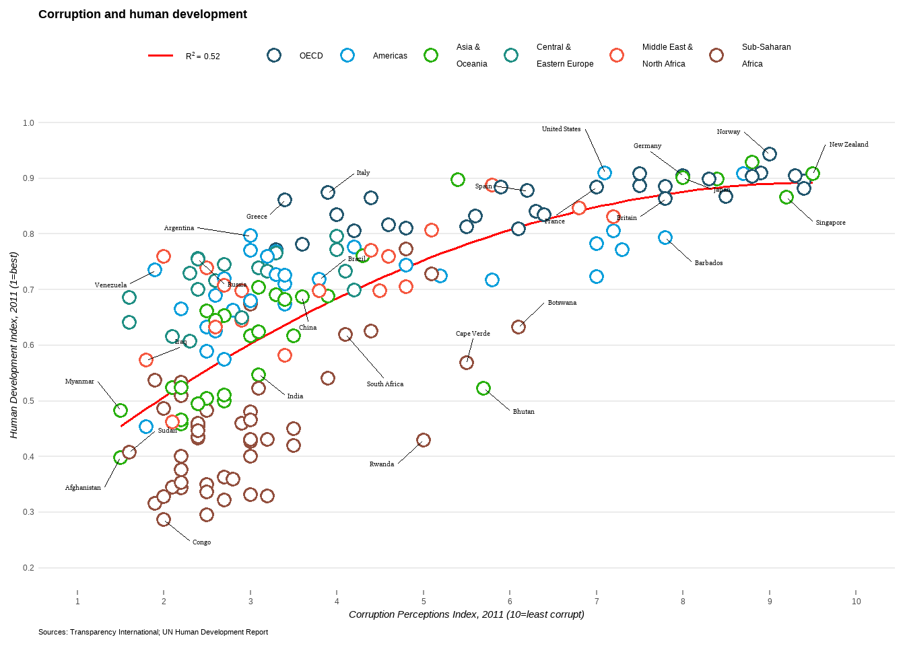
Instructions
ggplot2
Learning ggplot2
Here, you will learn how to make plots using the R package ggplot2. To learn this we will follow the tutorial by Raukr:
There are two exercises apart from learning basics which we will cover in this blog post:
Economist scatterplot
The aim of this challenge is to recreate the plot below originally published in The Economist. The graph is a scatterplot showing the relationship between Corruption Index and Human Development Index for various countries.
1. First, we need to load our required packages:
library(dplyr)
library(tidyr)
library(stringr)
library(ggplot2)
library(ggrepel)2. Download the data .csv file and read the data using:
ec <- read.csv("data_economist.csv", header = TRUE)
head(ec) X Country HDI.Rank HDI CPI Region
1 1 Afghanistan 172 0.398 1.5 Asia Pacific
2 2 Albania 70 0.739 3.1 East EU Cemt Asia
3 3 Algeria 96 0.698 2.9 MENA
4 4 Angola 148 0.486 2.0 SSA
5 5 Argentina 45 0.797 3.0 Americas
6 6 Armenia 86 0.716 2.6 East EU Cemt AsiaTo check that the right types of data is in the correct format we use:
- x = ‘CPI’ (numeric)
- y = ‘HDI’ (numeric)
- ‘Region’ (factor)
str(ec)'data.frame': 173 obs. of 6 variables:
$ X : int 1 2 3 4 5 6 7 8 9 10 ...
$ Country : chr "Afghanistan" "Albania" "Algeria" "Angola" ...
$ HDI.Rank: int 172 70 96 148 45 86 2 19 91 53 ...
$ HDI : num 0.398 0.739 0.698 0.486 0.797 0.716 0.929 0.885 0.7 0.771 ...
$ CPI : num 1.5 3.1 2.9 2 3 2.6 8.8 7.8 2.4 7.3 ...
$ Region : chr "Asia Pacific" "East EU Cemt Asia" "MENA" "SSA" ...3. ‘Region’ is currently formatted as character. We change this by running:
ec$Region <- factor(ec$Region)
levels(ec$Region)[1] "Americas" "Asia Pacific" "East EU Cemt Asia"
[4] "EU W. Europe" "MENA" "SSA" 4. Change names of ‘Region’:
The names of the regions also need to be changed, since the new labels are a bit long for one line we can add \n where we want breaks:
ec$Region <- factor(ec$Region,
levels = c(
"EU W. Europe",
"Americas",
"Asia Pacific",
"East EU Cemt Asia",
"MENA",
"SSA"
),
labels = c(
"OECD",
"Americas",
"Asia &\nOceania",
"Central &\nEastern Europe",
"Middle East &\nNorth Africa",
"Sub-Saharan\nAfrica"
)
)
levels(ec$Region)[1] "OECD" "Americas"
[3] "Asia &\nOceania" "Central &\nEastern Europe"
[5] "Middle East &\nNorth Africa" "Sub-Saharan\nAfrica" 5. Start building the plot using ggplot2:
The color of the points should be on ‘Region’.
ggplot(ec, aes(x = CPI, y = HDI, color = Region)) +
geom_point(shape = 21, size = 3, stroke = 0.8, fill = "white")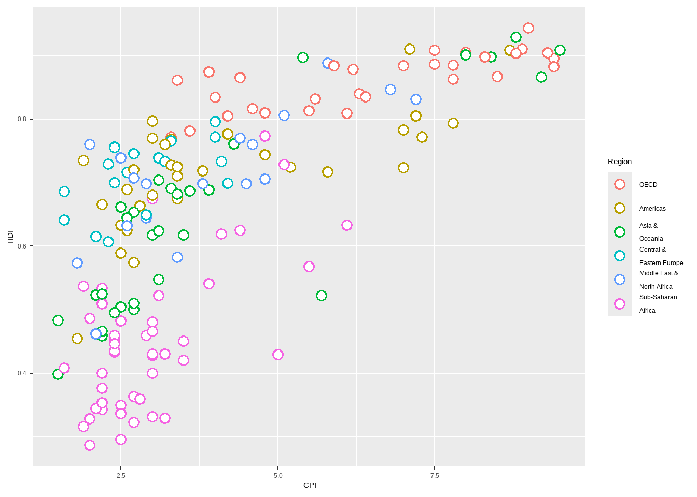
6. Add a trendline:
The line should be red, follow a custom equation y ~ poly(x, 2) for the linear model (lm), and not include confidence interval shading (se = Standard Error).
ggplot(ec, aes(x = CPI, y = HDI, color = Region)) +
geom_point(shape = 21, size = 3, stroke = 0.8, fill = "white") +
geom_smooth(method = "lm", formula = y ~ poly(x, 2), se = FALSE, linewidth = 0.6, color = "red")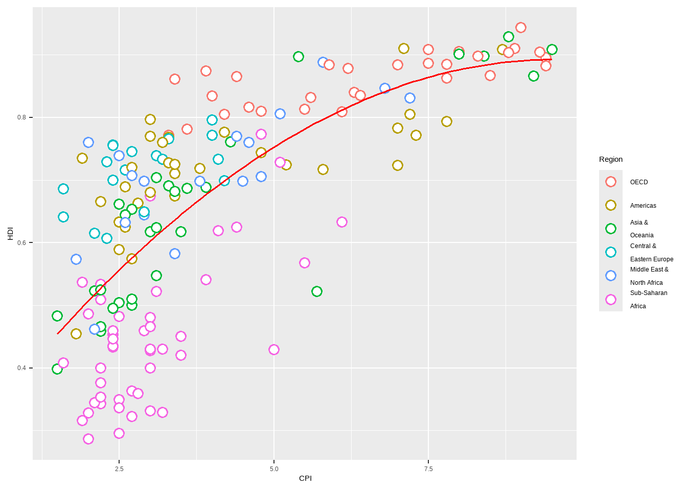
7. Add a legend for trendline and layer it underneath points:
We need to reorder the geoms and create a fake legend by adding aes().
p <- ggplot(ec, aes(x = CPI, y = HDI, color = Region)) +
geom_smooth(aes(fill = "red"), method = "lm", formula = y ~ poly(x, 2), se = FALSE, color = "red", linewidth = 0.6) +
geom_point(shape = 21, size = 3, stroke = 0.8, fill = "white")8. Add text labels for points:
To add labels for the points we need to make a list of names for the points by using concatenation of the names. In addition, since we gave the previous plot the variable p we can simply add the labels after using geom_text().
labels <- c("Congo", "Afghanistan", "Sudan", "Myanmar", "Iraq", "Venezuela", "Russia", "Argentina", "Brazil", "Italy", "South Africa", "Cape Verde", "Bhutan", "Botswana", "Britain", "New Zealand", "Greece", "China", "India", "Rwanda", "Spain", "France", "United States", "Japan", "Norway", "Singapore", "Barbados", "Germany")
p + geom_text(data = subset(ec, Country %in% labels), aes(label = Country), color = "black")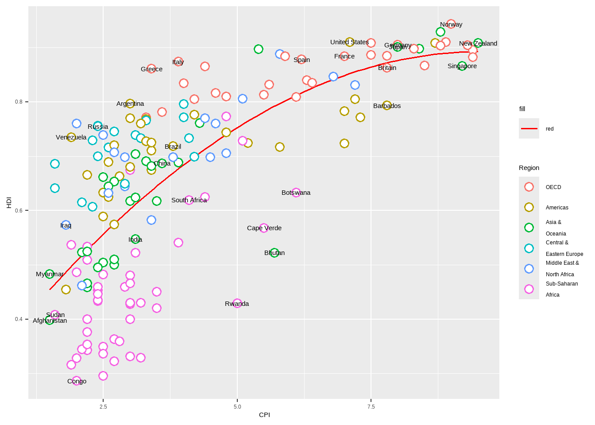
9. Change to a custom font:
Custom fonts can be used for the labels by providing the font name to argument family like so geom_text(family="fontname"). This is where the showtext package comes into play. The package registers fonts from ‘Google Fonts’ or a local font file.
The font used in The Economist is not free, we use a font called Slabo 27px instead.
p + geom_text(
data = subset(ec, Country %in% labels), aes(label = Country),
color = "black", family = "Slabo 27px"
)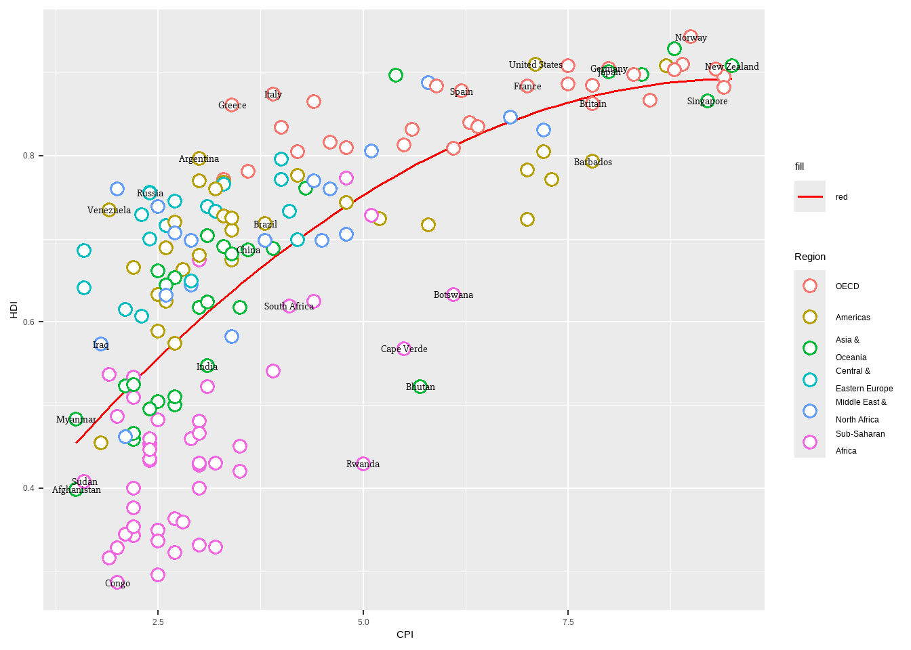
10. Correcting label overlap:
To avoid overlapping of labels, we can use a ggplot2 extension package ggrepel. We can use function geom_text_repel().
p <- p + geom_text_repel(
data = subset(ec, Country %in% labels), aes(label = Country),
color = "black", box.padding = unit(1, "lines"), segment.size = 0.25,
size = 3, family = "Slabo 27px"
)
p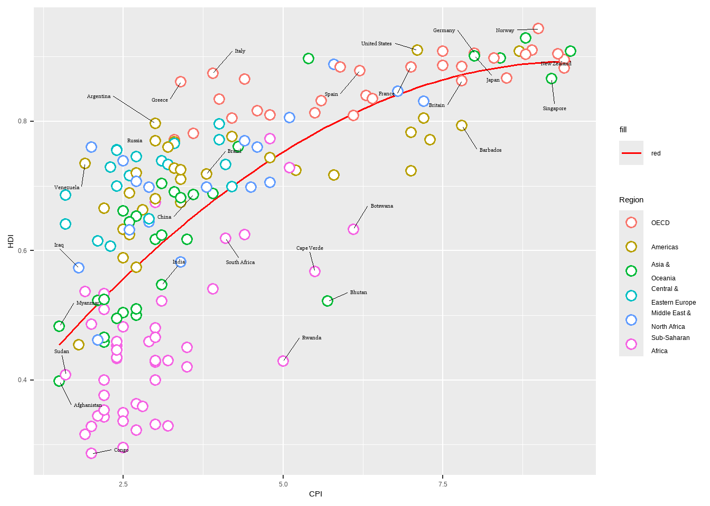
11. Adjust axes:
We can adjust axes breaks, axes labels, point colors and relabeling the trendline legend text.
x =‘Corruption Perceptions Index, 2011 (10=least corrupt)’
y = ‘Human Development Index, 2011 (1=best)’
x axis breaks = 1 to 10 by 1 increment
y axis breaks = 0.2 to 1.0 by 0.1 increments
p <- p + scale_x_continuous(
name = "Corruption Perceptions Index, 2011 (10=least corrupt)",
breaks = 1:10, limits = c(1, 10)
) +
scale_y_continuous(
name = "Human Development Index, 2011 (1=best)",
breaks = seq(from = 0.2, to = 1, by = 0.1), limits = c(0.2, 1)
)
p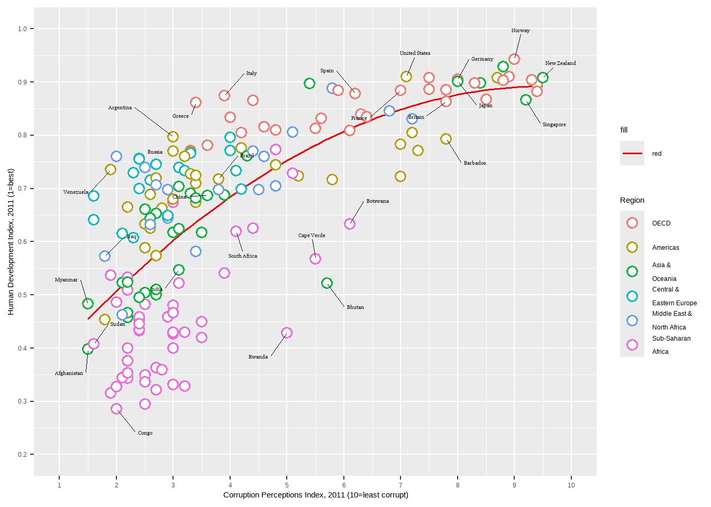
12. Pick colors manually:
For this we use two functions:
scale_color_manual()to set the color codes for pointsscale_fill_manual()to change the trendline label. Here we compute the model fit first, then use the resulting value to create the legemd entry asR²
trend_model <- lm(HDI ~ poly(CPI, 2), data = ec)
r_squared <- summary(trend_model)$r.squared
r_label <- as.expression(bquote(R^2 == .(round(r_squared, 2))))
p <- p + scale_color_manual(values = c("#23576E", "#099FDB", "#29B00E", "#208F84", "#F55840", "#924F3E")) +
scale_fill_manual(name = "trend", values = "red", labels = r_label)
p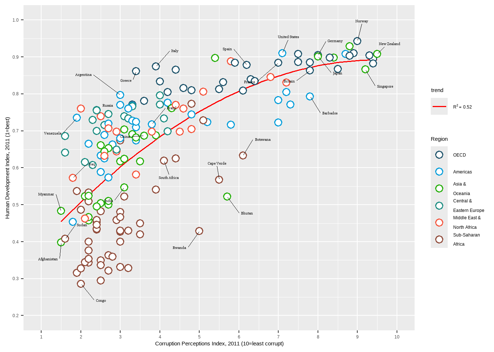
13. Add a Title and Captions:
Set these using the function labs().
- Title = ‘Corruption and human development’
- Caption = ‘Sources: Transparency International; UN Human Development Report’
p <- p + labs(
title = "Corruption and human development",
caption = "Sources: Transparency International; UN Human Development Report"
)
p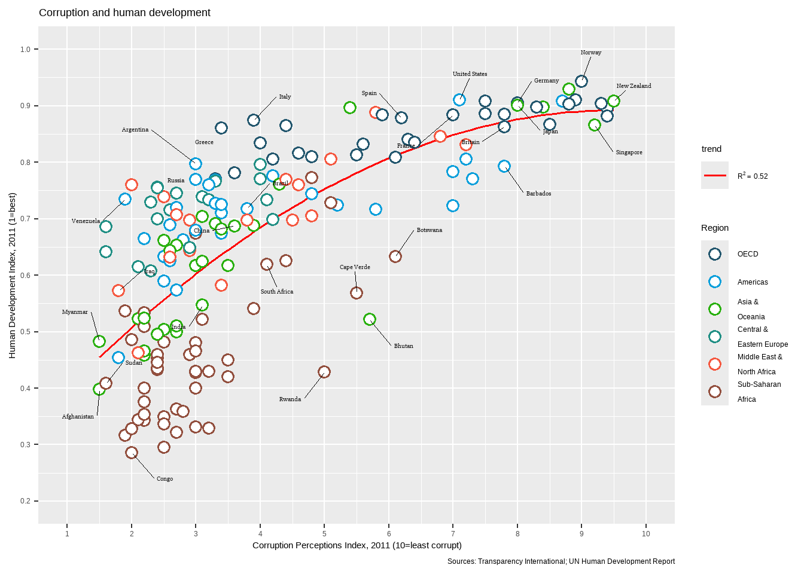
14. Add a Theme:
The theme we want is the following:
- Move the legend to the top and as a single row using
legend_position - Set a custom font for all text elements using using
base_family
p <- p + guides(color = guide_legend(nrow = 1)) +
theme_bw(base_family = "Slabo 27px") +
theme(legend.position = "top")
p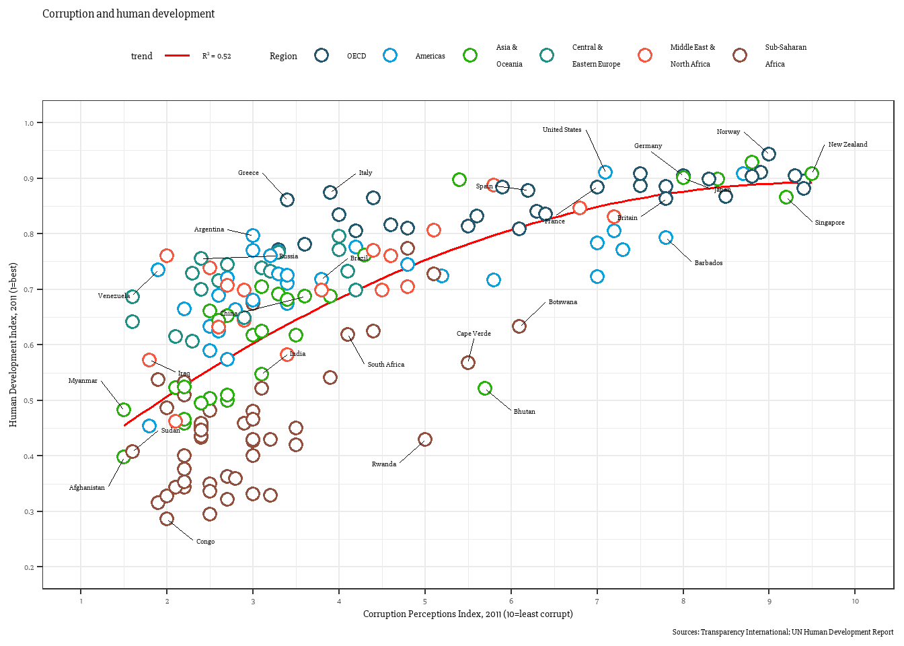
15. Final changes:
- Turn off minor gridlines
- Turn off major gridlines on x-axis
- Remove the gray background
- Remove panel border
- Remove legend titles
- Make axes titles italic
- Turn off y-axis ticks
- Change x-axis ticks to color grey60
- Make plot title bold
- Decrease size of caption to size 8
p + theme(
panel.grid.minor = element_blank(),
panel.grid.major.x = element_blank(),
panel.background = element_blank(),
panel.border = element_blank(),
legend.title = element_blank(),
axis.title = element_text(face = "italic"),
axis.ticks.y = element_blank(),
axis.ticks.x = element_line(color = "grey60"),
plot.title = element_text(face = "bold"),
plot.caption = element_text(hjust = 0, size = 8)
)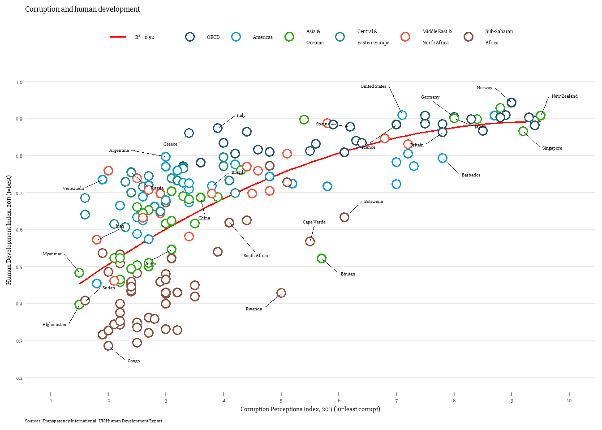